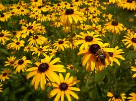

BLACK EYED SUSANS
After the first season, Black Eyed Susans can reseed themselves.

- If you have allowed the blooms to dry out, some of the seeds will fall to the ground on their own. The tiny seeds are inside the brown/black centers of the flowers.
- When the plants are dried out, pull them out root and all. You can shake the spent flower heads over the area where you just pulled the plants from.
- You can cut the flower heads off and let them drop to the soil where you just pulled the plants from.
- You can cut the flower heads off and scatter the heads in a different flower bed where you want Black Eyed Susans next year. Seedlings will emerge in the new area next spring.
- You can cut the flower heads off and place them on a cardboard tray to finish drying for about a month. You can decide later where you want to scatter the seeds or you can share the seeds with a friend.
- If you keeping storing seeds until next spring, place the dried seeds inside of an envelope or cardboard box. Keep the seeds in a cool, dry location such as a basement or an attached garage.
Go to Fall Flower Home Page